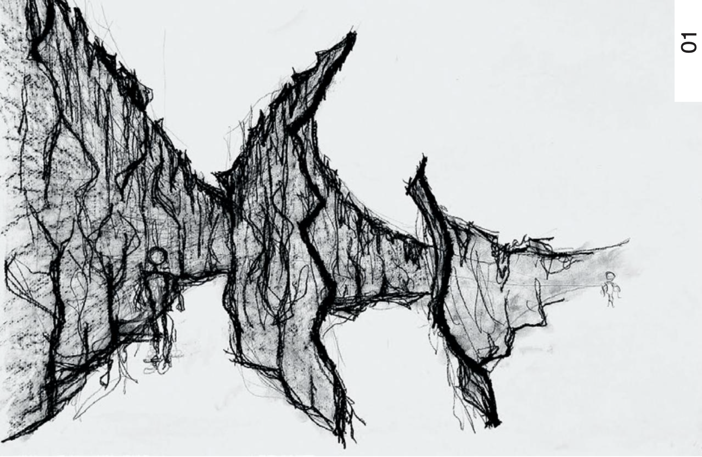

(November 2025 - Mendoza, Argentina)
C — Contrast: Towards an Architecture
A — Analogy: Whales
T — Theory: Goulthorpe and
T — Target: education
t — tale: the Montblac experience by MG
The CarbonHouse is a research initiative funded by ARPA-E that involves MIT and 9 groups of international
scientists, researchers, and composite fabricators, all focused on emerging forms of Carbon for their
holistic use in benign, high-performance buildings. As part of MIT Architecture, we been tasked with
inventing a new material/production potential as a means to supplement hydrogen production at
vast scale: only the building sector is held to be able to absorb carbon at the scale of C21
projected global energy production, with renewables seen as falling well short of global demand.
(C — Contrast) In Towards a New Architecture, Le Corbusier gave vision to steel and concrete buildings, evidenced
in elegant pioneering prototypes (Villa Savoie, Phillips Pavilion, etc). This proposal
imagines a now-carbon material paradigm, similarly learning from boats and planes (A — Analogy), but deploying
the brilliant 6th element for its full architectural potential, uniquely polyvalent and vividly polyfunctional.
The site is the coastline of Norway’s stunning but desolate Lotofen archipelago, recently
subject to a government moratorium on exploratory drilling for oil owing to the environmental
activism of young Norwegian activists, yet poised atop the vast oil and gas reserves that have
supplemented the enviable lifestyle of the small Scandinavian populace. The history of the region is
animated by successive commercial exploitation of natural resources, from fish to timber to whales
and now to hydrocarbons, each time facing economic hardship as reserves have been depleted,
often being forced to innovate to remain competitive. Here we seek innovation well in advance of
depletion in response to the looming environmental threat posed by hydrocarbons: we seek to
build-with rather than burn the precious organic legacy.
You will devise a research institute, akin to the Aspen Institute (humanitarian issues), the Rocky
Mountain Institute (Energy/CO2 Policy) or the Salk Institute (Biomedical Research) – all serene
research retreats that have exerted profound influence on their respective fields. But this will be a
Center For Biogeochemistry In The Anthropocene (CBA), looking to instantiate a carbon
architecture as a means to lock carbon in solid form to help restore the magisterial but increasingly
fragile carbon cycle described by the Norwegian biologist, Dag Olav Hessen, who heads the CBA
Center. It is poignantly sited in an evidently fragile and despoiled ecosystem.

The DOE and ARPA-e funded CarbonHouse initiative centers on proving quite novel forms of carbon for use in buildings, envisaging carbon composite structural/thermal/electrical envelopes that deploy carbon nanotube fiber (CNT) and carbon foam (CFoam), especially. These are of salient interest to ARPA-e as morphologies of carbon that might supplement hydrogen production from processes such as methane pyrolysis, where macro-scale hydrogen would require the usage of carbon at the scale of energy markets. Enabling the cost-effective building production via composites required a high degree of automation via CNC machines, and fiber-based structures are notorious for needing computational analysis as well as digital production. The work done on CarbonHouse then follows my prior doctoral studies, which looked to marry material research, engineering, and digital fabrication, here in respect of nanoscale carbon and its particular manufacturing needs and performance properties. Assamblage: Prof. Mark Goulthorpe, Soala Lolia Ajienka, Augusto Gandia, Gal Ringel, Dave Gailus (NanoComp Technologies/Huntsman), Rudolph Olson (CFOAM), Brian Joseph, Brian Gordon, and Michael Spencer (Touchstone Advanced Composites), Radek Michalik (Composite Design Studio), Prof. Gregoris Norris, Prof. Randolph Kirchain, and Takuma Ono.
Publication
This project, as part of the non-invitation to the CARBONFJORD design studio, focuses on the conceptual vertical flexibility enabled by CNT continuous skins. The hand drawing stretches the concept of "planta libre", a dreamy image (or Goulthorpe's nightmare) of elegant skins that contradicts the vertical deconstructive possibilities for carbon dwellings.
Assamblage: Mark Goulthorpe, Dimitrios Chatzinikolis, Augusto Gandia
The hybrid making workshop introduces a methodology for including material and fabrication constraints, as well as human embodied intelligence in digitally produced artifacts extending the full exploration of digital capabilities. The hybrid architectural modeling methodology consists of constructing digital components (parametric scripts and the digital objects they engender), as well as analogue components (scaled artifacts embedded with microsensors). The use of microsensors enables linking these analogue and digital components. Furthermore, to create a uniform “hybrid” modeling interface, digital material behaviors must be aligned (parametrically) to match physical material behaviors. By focusing on aligning across behaviors of analogue-digital media, hybrid making uncovers a novel approach to digital making: digital modeling based on the properties of actual materials and fabrication processes.


Gradual Assemblies serves as the overarching urbanistic proposal, demonstrating a new paradigm for metropolitan growth and density. Rejecting conventional top-down master planning, this project proposes a continuous, evolving, and resilient urban infrastructure. It champions the idea of Synergetic Infrastructure—a system where decentralised components (like the subsequent house modules) organically aggregate over time, optimising energy and social throughput through self-regulating geometry. This approach directly confronts global urban problems by providing a scalable, non-finite model for growth that remains perpetually adaptable to changing human needs and environmental pressures.
(Photo: Gramazio Kohler Research)